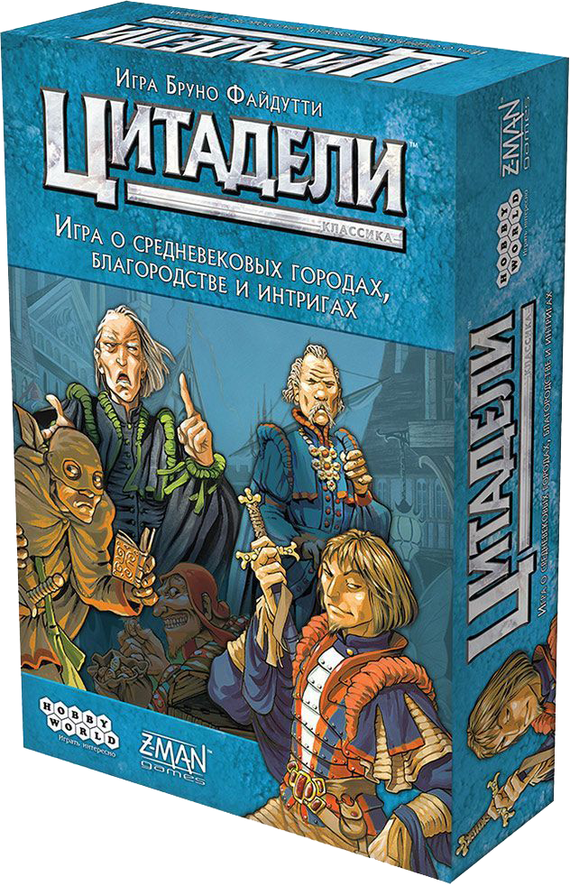

Настольная игра "Цитадели"
«Цитадели» — настольная игра немецкого стиля, разработанная Бруно Файдутти (англ. Bruno Faidutti).
Впервые она была опубликована во Франции в 2000 под именем «Citadelles», позже в Германии под именем «Ohne Furcht und Adel» (нем., «Без страха и благородства»).
Игра входит в топ-200 лучших настольных игр по рейтингу сайта «BoardGameGeek» (англ. BoardGameGeek).
На русском языке издаётся компанией «Мир Хобби».
Играйте со своими друзьями в игре и получите должность главного "правителя"
